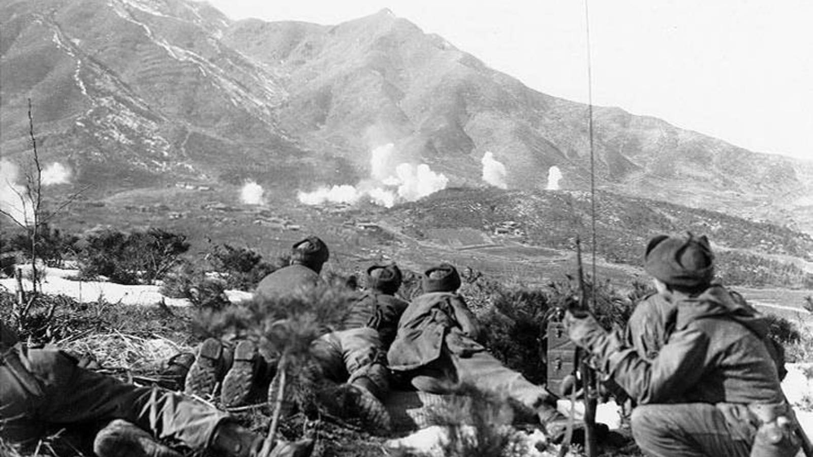
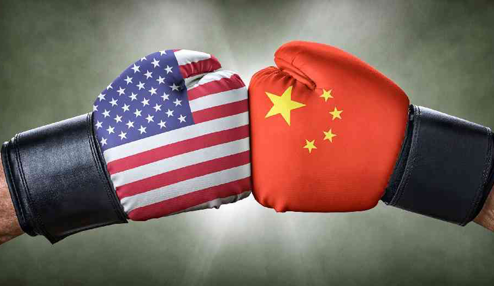
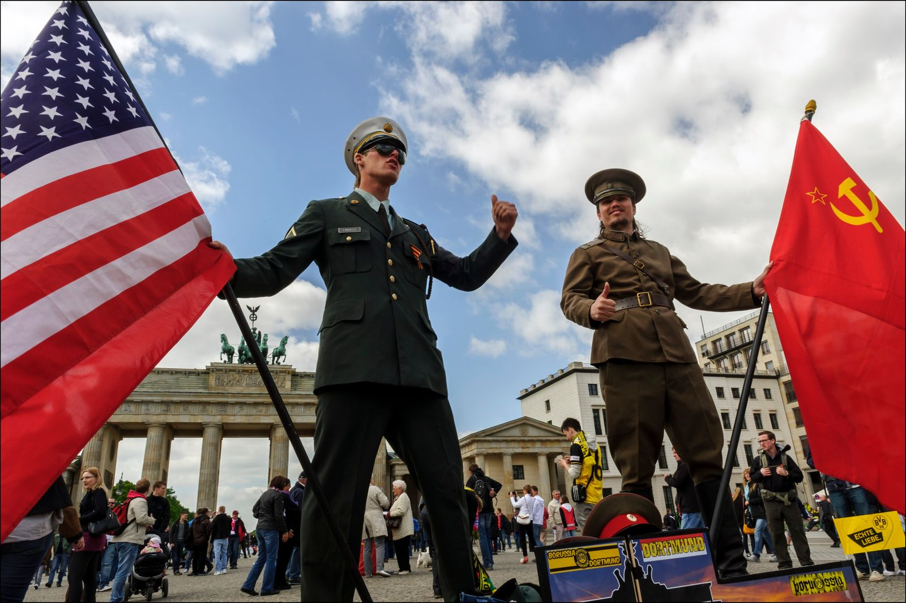
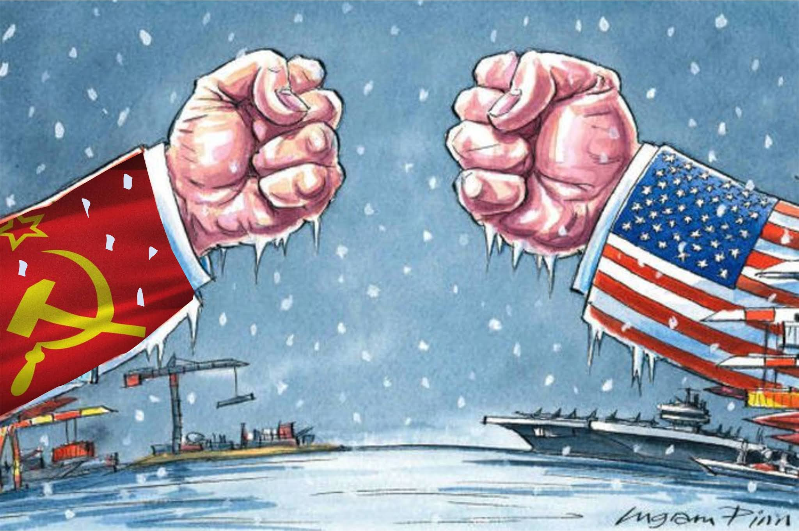

La Guerra Fría fue un conflicto político, ideológico y económico que ocurrió aproximadamente entre 1947 y 1991. Se le llama “fría” porque nunca hubo un enfrentamiento directo a gran escala entre las dos principales potencias, sino que la rivalidad se manifestó a través de tensiones, amenazas, propaganda y conflictos indirectos.

Después de la Segunda Guerra Mundial, el mundo quedó dividido en dos bloques liderados por: Estados Unidos (capitalista) Unión Soviética (comunista) Ambas potencias emergieron como líderes mundiales y comenzaron a competir por influencia política, económica y militar en todo el planeta.

Las principales causas de la Guerra Fría fuero:
‣Diferencias ideológicas: capitalismo vs comunismo
‣Lucha por el poder global
‣Desconfianza mutua tras la Segunda Guerra Mundial
‣Intereses económicos y políticos opuestos
‣Estas tensiones hicieron que ambos bloques se vieran como enemigos potenciales.

El conflicto central de la Guerra Fría se basaba en dos sistemas opuestos: Capitalismo: sistema económico basado en la propiedad privada y el libre mercado. Comunismo: sistema que busca la igualdad social mediante la propiedad colectiva y la planificación estatal.